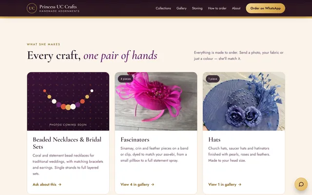
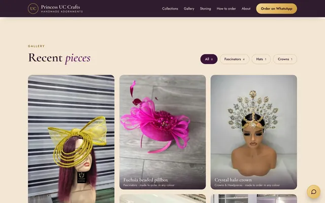
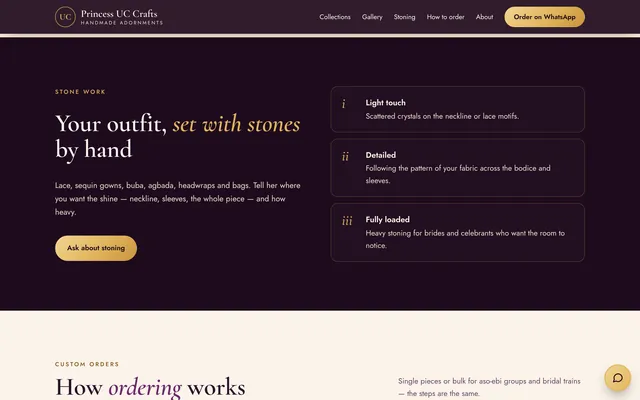

WebsitesUI/UX
Princess UC Crafts
Handmade pieces, finally online.
Ready to launch
A website for Princess UC Crafts, Princess Uche Charity's handcraft studio: beaded necklaces and bridal sets, fascinators, hats, crowns, hand fans and stone work on clothing, all made to order. The site is built and waits on the business details and more photos before launch.

- Type
- Client small business website
- Built with
- HTML, CSS, JavaScript
- Launch
- After the client adds contact details and photos
- My role
- Design and development
The brief
Handmade work sells on detail: the beads, the shaping of a hat, the sparkle of stones on fabric. The site's job is to show that detail properly, explain how custom orders work and make it easy to start an order on WhatsApp.
Features
CollectionsBuilt
Six collections, from beaded necklaces and bridal sets to stoning on clothes, each with a cover photo or a bead pattern until photos arrive.
Filterable gallery with a viewerBuilt
Filter recent pieces by collection and open them in a full screen viewer with keyboard and swipe support.
Hero slideshowBuilt
Featured pieces rotate in an arched frame, and stop rotating for visitors who prefer reduced motion.
Stoning levels and ordering stepsBuilt
Three levels of stone work and a four step order process, from sending inspiration to pickup or delivery.
WhatsApp orderingBuilt
Every order button opens a ready written WhatsApp message, including the piece being viewed.
One file to updateBuilt
All business details, collections and photos live in one data file, so the owner can add pieces without touching the layout.
Launch contentPlanned
The WhatsApp number, location, delivery areas, her story and more photos are still to be supplied.
Stack
- HTML
- CSS
- JavaScript
- Responsive design
Screens
Captured from the finished build with the client's own product photos.
- Home

Collections
Gallery with filters
Stone work levels


Status
Built and ready to launch once the client adds contact details, delivery areas and more photos. There is no public URL yet.